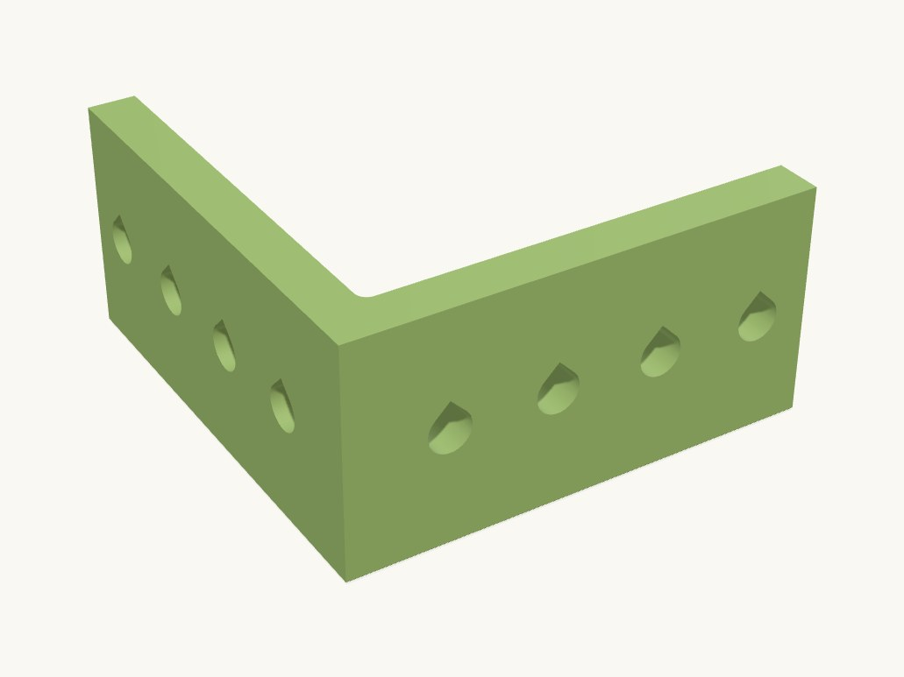

Work / Hardware

Technical details
Part: bracket — primitives.l_bracket at the parameters in params.py. Fits M3 socket-head or pan-head screws (3.6 mm printed hole = ISO 273 medium 3.4 + 0.2 oversize).
Print orientation: on its side, i.e. the L profile lies in the bed plane and the 20 mm width is the print height, so bending load at the corner runs along the layers instead of across them. Consequently every hole is horizontal and is cut as a teardrop (point up) so it bridges cleanly.
Assumptions (user not available): width 20 mm; holes evenly spread over the free span of each arm (centres 10 / 22 / 34 mm from the outer corner, on the width centreline); sharp outer corner; 1 mm inside fillet; no counterbores.
Parts
| Part | Size (mm) | Volume | Thinnest wall | Printability |
|---|---|---|---|---|
| bracket | 40 × 40 × 20 | 5.7 cm³ | 2.7 mm | passes |
Engineering views
Downloads
- bracket.stepSTEP · 146 KB
- bracket.stlSTL · 171 KB
- l_bracket_40.3mfwhole plate · 41 KB
Library parts used
Parametric components shared with the other designs; see the parts library.
| Component | What it does | Printed in |
|---|---|---|
L bracketprimitives.l_bracket | 90-degree L (angle) bracket with a row of screw clearance holes along each arm, standing on its side on z=0 (strongest print orientation). | not yet |
Source: models/l_bracket_40 · built 2026-09-09 13:43
40 mm corner bracket
A stiff 40 mm L-bracket for M3 screws, oriented on the printer so the corner is as strong as it can be.
Printed on its side so the load runs along the layers, not across them. The simplest thing here, and a good example of how orientation decides strength.
- Size
- 40 × 40 × 20 mm
- Print plate
- 40 × 40 × 20 mm
- Parts
- 1
- Filament (PLA)
- about 6 g
- Print time
- about 0.6 h
- Status
- Ready to print
Want it in another size, colour or material? Say so in the request: fitting it to your object is a $5 adjustment, and you see the revised design before it's printed.
Measure it, describe it, and we'll draw it.
Requests take a few minutes. You'll get the design and a price back before anything is printed.